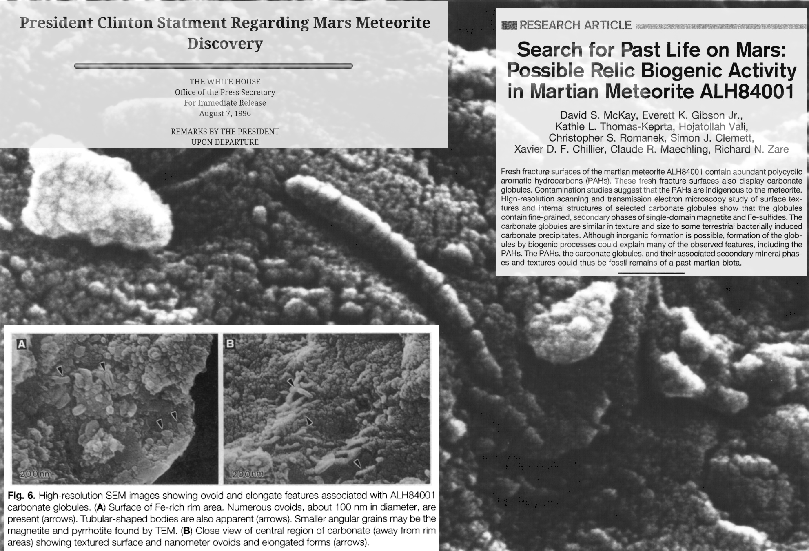

In 1996, McKay et al. claimed in a paper published in Science that the features on ALH84001 were biogenic in origin. The White House issued a press statement, and although few believe McKay's origin claims plausible, the formation processes of ALH84001 features continue to be discussed (as recently as Steele et al 2022).
"It is concluded that morphology cannot be used unambiguously as a tool for primitive life detection."